Satellite land surface temperature (LST) is the main evidence base for urban heat planning, but machine learning models of LST are usually validated on randomly held-out pixels, which rewards memorising places, and are rarely explained beyond a single vegetation index. We model Pune’s pre-monsoon daytime LST on a 100 m grid of 81,084 land cells for 2023–2025 from Sentinel-2 spectral indices, ESA WorldCover land-cover fractions and terrain, never from coordinates. The target is each cell’s anomaly from that year’s city median. A mean baseline, linear regression, Random Forest, XGBoost and LightGBM are compared under random, spatial-block and spatio-temporal cross-validation, repeated over five random block layouts with blocks sized from the residual autocorrelation range. Random cross-validation flatters the tree models by 0.12–0.15 °C RMSE against 4 km spatial blocks, but linear regression by only 0.023 °C, and it changes which model looks best. On 2025, in places and a year the models never saw, LightGBM reaches RMSE 1.747 °C (R² 0.721), tied with XGBoost and Random Forest. Interventional SHAP attributes most of the explained variation to vegetation, dryness and moisture, with a tree-cover response that flattens beyond about 10% cover. Pune shows a daytime surface cool island, and the negative built-up–temperature association shrinks by 87% once vegetation and dryness are modelled. Scenarios for the 2,673 hottest urban cells associate raising tree cover to about 10% with 0.4–1.0 °C cooler surfaces. All results are cross-sectional associations, not causal effects.
Introduction
Indian cities are warming, and municipal heat action plans increasingly ask a practical question: where would greening reduce heat the most? Satellite land surface temperature (LST) is the usual evidence base for that question, because it is free, wall-to-wall and repeatable. LST is a surface temperature, however, not air temperature or thermal comfort [1], and the maps that machine learning (ML) models produce from it are easy to over-trust.
Two weaknesses recur in the urban heat island (UHI) literature. The first is single-index, linear analysis: LST is correlated with one vegetation or built-up index, which hides thresholds, saturation and interactions between drivers [2]. The second is inflated accuracy: neighbouring cells are almost identical, so a model validated on randomly held-out cells can score well by recognising places it has effectively seen in training. That gap between apparent and real accuracy has been demonstrated repeatedly in spatial ecology [3], [4], [5].
This paper presents MirageAI, a reproducible pipeline for Pune, India, that addresses both weaknesses. The name reflects the main finding: Pune’s expected daytime heat island turns out to be a mirage, with the built core cooler than its dry surroundings. The pipeline also connects both to a planning question. Its contributions are:
- a 100 m, three-year, multi-source modelling table for the pre-monsoon season, built entirely in Google Earth Engine [6];
- a validation design whose block size is set from the residual autocorrelation range, with randomised block layouts repeated over five seeds and a spatio-temporal test on unseen places in an unseen year;
- a direct measurement of how much random cross-validation (CV) overstates accuracy, showing that the inflation is model-dependent;
- an explanation of the fitted models with interventional SHAP [7], [8], checked for robustness across models and SHAP methods, with thresholds and interactions quantified;
- bracketed greening scenarios for the hottest urban cells, reported with explicit bounds and caveats rather than as forecasts.
Every methodological choice is recorded with its rationale in a decision log, and every number quoted in this paper is read from the project’s output tables and checked automatically against them. The remainder of the paper reviews the literature (Section II), states the problem and objectives (Sections III–IV), describes the method, data, preprocessing, exploratory analysis and features (Sections V–IX), the models, tuning and metrics (Sections X–XII), and reports and discusses the results (Sections XIII–XVIII).
Literature Review
Surface urban heat islands and their drivers
The surface urban heat island (SUHI) is the difference in LST between a city and its surroundings. Thermal remote sensing made it observable at city scale, but LST describes the radiative skin temperature at the satellite overpass, which depends on surface materials, moisture and view geometry, and differs from the air temperature people experience [1]. Across 419 large cities, daytime SUHI intensity is explained mainly by differences in vegetation cover and evapotranspiration between the city and its surroundings, not by city size alone [9]. City-scale studies have long used the LST–vegetation relationship, typically through NDVI, as the main explanatory variable [2]. Systematic reviews of urban greening find that parks and trees are associated with cooler surroundings, but most evidence is observational and site-specific [10].
Surface heat in Indian cities
Indian cities do not always show the textbook daytime heat island. A national analysis found that daytime SUHI intensity in many Indian cities is negative in the pre-monsoon summer, with cities cooler than their surroundings, and associated this with low vegetation and evapotranspiration in dry, non-urban surroundings; at night and in other seasons the sign flips [11]. Later multi-year studies of Indian cities confirm strong day–night and seasonal contrasts in SUHI intensity [12], [13]. Pune lies on the semi-arid Deccan plateau, with dry grassland, fallow farmland and bare hills around a built core, which makes it a likely candidate for a daytime cool island. That expectation is tested here rather than assumed.
Machine learning for LST mapping
Tree ensembles such as Random Forest [14] and gradient-boosted trees (XGBoost [15], LightGBM [16]) are now standard for mapping LST from land cover and spectral indices, because they capture nonlinear responses and interactions without manual feature design. Their flexibility is also a risk: with spatially autocorrelated data they can learn place-specific structure that does not transfer to new areas.
Spatial validation
Roberts et al. [3] showed that random CV on spatially, temporally or hierarchically structured data gives over-optimistic error estimates, and recommended block CV with blocks at least as large as the range of autocorrelation. Ploton et al. [4] found that large-scale ecological maps that looked accurate under random CV had little predictive skill under spatial CV. Meyer et al. [5] showed that spatially aware validation also changes which predictors appear important. Tools for building spatially separated folds are now widely available [17]. Most LST studies still report random-split accuracy, and few measure how large the optimism is for different model families.
Explainable machine learning
SHAP values decompose each prediction into additive feature contributions with game-theoretic guarantees [7]. TreeSHAP computes them exactly for tree ensembles, and its interventional variant, which breaks feature dependence using a background sample, avoids attributing a correlated feature’s effect to its neighbours in the conditional tree path [8]. For satellite predictors, which are strongly correlated, the choice between these variants matters. SHAP explains the fitted model, so its values are associations within the data, not causal effects.
Research gap
Taken together, the literature leaves three gaps that this study addresses for Pune: (i) no spatially validated, explained ML model of pre-monsoon LST at 100 m; (ii) little evidence on how much random CV inflates accuracy for different model families on the same data; and (iii) no quantified, bounded estimate of the cooling associated with greening the city’s hottest urban cells.
Problem Statement
Given satellite-derived land-cover, spectral and terrain features for every 100 m cell of Pune, the task is to predict the cell’s pre-monsoon daytime LST anomaly in places and years the model has not seen, and to explain which features the predictions depend on. This is a supervised regression problem on spatially autocorrelated data, with three requirements that standard practice does not meet together:
- Honest accuracy. Reported error must reflect performance on unseen areas, not on neighbours of training cells, so validation must hold out whole spatial blocks and a whole year.
- Trustworthy explanation. Driver rankings must be robust to the choice of model and SHAP method, and nonlinear effects must be quantified, not described.
- Actionable, bounded scenarios. The cooling associated with additional tree cover in the hottest urban cells must be stated as a range with its assumptions, not as a single forecast.
Geographic coordinates must never be model inputs, because a model that knows where a cell is can memorise it instead of learning its drivers.
Objectives
The study answers five research questions (RQs):
- RQ1. Which land-cover and terrain factors drive daytime LST in Pune, and how strongly?
- RQ2. Do nonlinear models capture driver effects that linear models miss (thresholds, saturation, interactions)?
- RQ3. By how much does random cross-validation overstate performance compared with spatial block cross-validation?
- RQ4. How much cooling is associated with realistic increases in tree cover in the hottest cells?
- RQ5. Does Pune show a daytime surface urban cool island in the pre-monsoon season, and does the negative built-up–LST correlation vanish once vegetation and dryness are controlled for?
The objectives follow directly: (O1) build a clean 100 m modelling table for three pre-monsoon seasons; (O2) design leakage-proof validation sized from the measured autocorrelation; (O3) compare four learners and a baseline on identical folds; (O4) explain the reference model with SHAP and check the explanation for robustness; and (O5) simulate greening scenarios with explicit bounds and caveats.
Methodology
Fig. 1 summarises the pipeline. Data are extracted and composited in Google Earth Engine (Section VI) and aggregated onto a common 100 m grid; the clean table carries a within-year LST anomaly target and 13 features (Sections VII–IX). The validation design is fixed before any model is tuned: block size comes from a residual variogram, and blocks are dealt to folds at random over five seeds (Section X). Four learners and a baseline are tuned inside spatial CV and evaluated under random, spatial and spatio-temporal schemes (Sections X–XII). The reference model is explained with interventional SHAP, and greening scenarios are run through three tuned models with lower and realistic bounds (Section X).
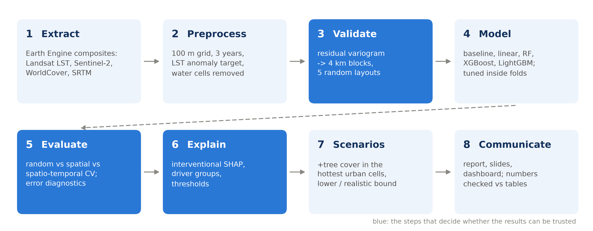
Three engineering rules hold throughout. All preprocessing and tuning happen inside the CV folds, through scikit-learn pipelines and group-aware splitters [18]. The 2025 season is never used for model selection. And every model runs on the CPU with fixed seeds, so reruns reproduce predictions bit for bit. All constants (area, grid, years, feature lists, seeds) live in one configuration module, and coordinates are excluded from the feature list by an assertion.
Dataset
Study area
The area of interest is a 73.72–74.02° E, 18.42–18.65° N box covering the Pune and Pimpri-Chinchwad municipal cores, processed in UTM zone 43N (EPSG:32643) on a 100 m grid. 100 m matches the native resolution of the Landsat thermal band. The grid has 81,983 cells in each of 2023, 2024 and 2025 (245,949 cell-years). The season is pre-monsoon, March to May, when skies are clear and surface heat peaks.
Data sources
Table I lists the four sources. All extraction runs in Google Earth Engine [6], and each year is downloaded as one multi-band GeoTIFF stack and converted to a table with one row per cell.
- LST: Landsat 8 and 9 Collection 2 Level-2 surface temperature [19], cloud-masked from the QA band and composited as the seasonal median.
- Spectral indices: NDVI, NDBI and MNDWI from Sentinel-2 surface reflectance [20], with scene-classification masking.
- Land cover: fractions of tree, shrub, grass, crop, built-up, bare and water in each 100 m cell, from ESA WorldCover 2021 at 10 m [21]. Land cover is static across the three years.
- Terrain: elevation and slope from SRTM [22], and distance to water.
| Source | Product | Native resolution | Used for |
|---|---|---|---|
| Landsat 8/9 | Collection 2 Level-2, band ST_B10 | 100 m (thermal) | Target: LST |
| Sentinel-2 | Surface reflectance, harmonized | 10–20 m | NDVI, dryness, moisture |
| ESA WorldCover | v200, 2021 | 10 m | Seven land-cover fractions; distance to water |
| SRTM | 1 arc-second DEM | 30 m | Elevation, slope |
Fig. 2 shows the 2024 composite. The river corridors and reservoirs are the coolest surfaces, and the dry hills and fringe are the hottest.
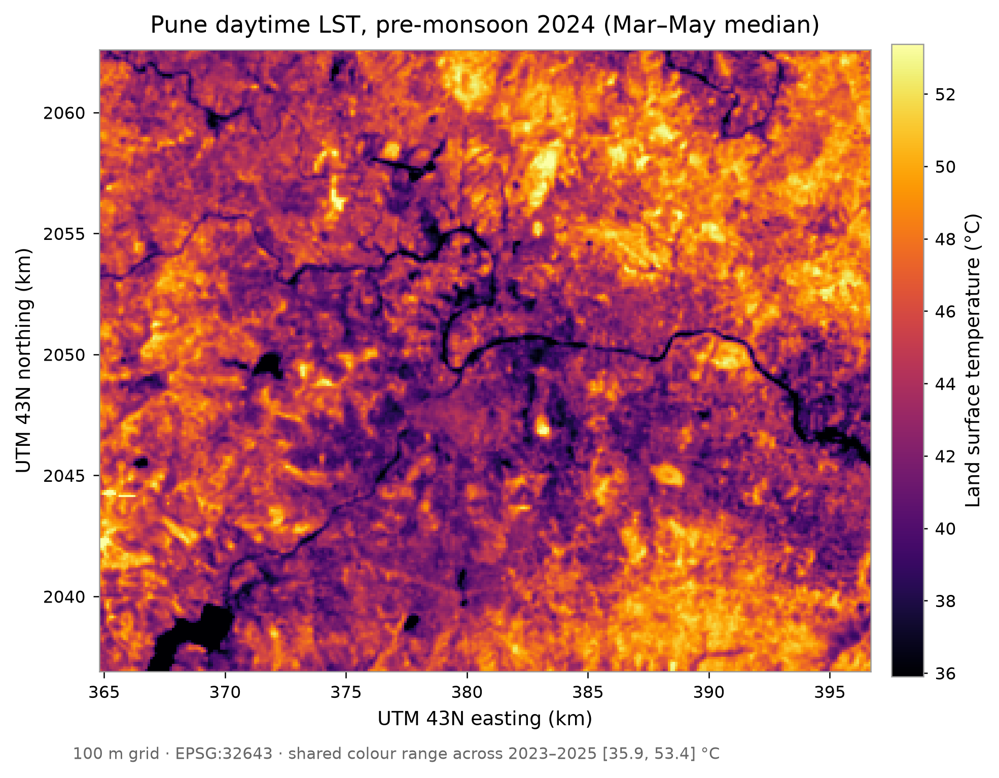
Dataset summary
Every cell has at least four clear Landsat observations in every season (median 7, 10 and 9 observations in 2023, 2024 and 2025), so no cell is dropped for missing data. The city-wide median LST is 46.10, 44.31 and 44.81 °C in the three years; a third of land cells (33%) are urban (built-up fraction ≥ 50%), and 42.6% of land cells contain no WorldCover tree pixel at all. Table II gives the per-year figures after water exclusion. The land cover and the urban mask are static, so the 26,726 urban cells are the same cells in every year.
| Year | Land cells | Median clear scenes | Area median LST (°C) | Anomaly SD (°C) | Anomaly 5th–95th pct. (°C) | Mean NDVI |
|---|---|---|---|---|---|---|
| 2023 | 81,084 | 7 | 46.10 | 3.67 | −5.61, +6.41 | 0.265 |
| 2024 | 81,084 | 10 | 44.31 | 3.23 | −4.83, +5.67 | 0.255 |
| 2025 | 81,084 | 9 | 44.81 | 3.37 | −5.23, +5.74 | 0.261 |
Data Preprocessing
Scaling and masking. Landsat ST_B10 digital numbers are converted to kelvin with the Collection 2 scale factor (0.00341802) and offset (149.0), then to °C. Pixels flagged as cloud, dilated cloud, cirrus or cloud shadow in QA_PIXEL are masked, as are Sentinel-2 pixels in the scene-classification classes for cloud shadow, cloud (medium and high probability), cirrus and snow. Scenes with more than 30% cloud are skipped. Masked pixels are written with an explicit nodata sentinel, so a missing value can never be read as zero.
Compositing and aggregation. Each source is reduced to a seasonal median per pixel and then aggregated to the 100 m grid with an area-weighted mean. WorldCover classes are converted to binary masks before averaging, so each land-cover feature is the fraction of the cell in that class, and the seven fractions sum to one. Distance to water is computed on a 30 m grid from the WorldCover water class.
Stable identifiers. A cell identifier and its 1, 2,
4 and 8 km block identifiers are computed from the UTM coordinates
alone, never from the year, so the 2023, 2024 and 2025 copies of a cell
always fall in the same block and therefore the same fold. A test
asserts this for every cell. An early version that rounded half-cell
offsets merged adjacent columns; the test caught it and the identifiers
now use floor.
Target. The target is the within-year anomaly : each cell’s LST minus that year’s median over the whole area,
Absolute LST differs between years because of scene timing and weather, and no feature encodes the year, so the level is not learnable and would only add noise to the 2025 test.
Water exclusion. Cells whose area is at least 50% water are removed before any split: 899 cells in each year, 2,697 of 245,949 rows, none of them urban. That leaves 243,252 rows (81,084 per year). Reservoir LST is governed by the thermal inertia of water, not by land-surface drivers, and water is not a planning lever. Water fraction and distance to water remain as features. The anomaly keeps its whole-area median: a land-only median would shift every anomaly by only 0.045–0.051 °C.
Exploratory Data Analysis
The city is cooler than its surroundings by day. In all three years the core (land cells within 5 km of the area’s centre) is cooler than the outer ring (land cells beyond 12 km), by 3.661 °C (2023), 3.382 °C (2024) and 3.970 °C (2025), and the core is greener: mean NDVI 0.349 against 0.249 in 2024. Fig. 3 shows the same pattern cell by cell. Mean LST anomaly falls by about 2 °C from the least-built to the most-built cells, rising slightly only in the densest decile. Dryness is highest in the least-built cells. This matches the daytime pre-monsoon cool island reported across Indian cities, which Shastri et al. [11] associate with low vegetation and evapotranspiration in dry non-urban surroundings; see also [12] and [13].
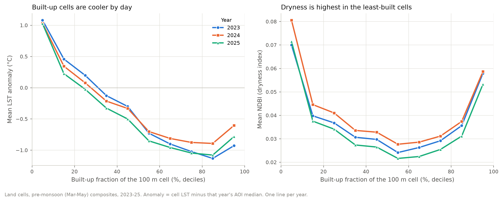
Distribution and spread. The anomaly is close to symmetric in every year, with a standard deviation of 3.67, 3.23 and 3.37 °C over land cells in 2023, 2024 and 2025 and extremes of roughly −16 to +14 °C, the cold tail coming from riparian vegetation and reservoir edges. A model that predicts the mean has an RMSE of about 3.4 °C, which is the floor every learner has to beat. Fig. 4 shows why the anomaly, not absolute LST, is the target: the three seasons are offset by up to 1.8 °C in level but have almost the same shape once each year’s median is removed.
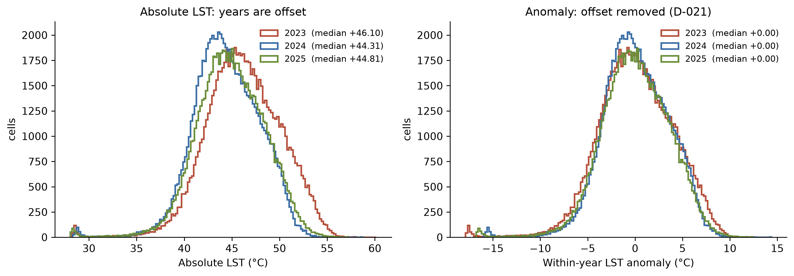
Correlations. Fig. 5 shows the pooled correlation matrix from the exploratory phase, computed before water cells were removed. On land cells the strongest single correlates of the anomaly are the dryness index (+0.70), grass fraction (+0.61), NDVI (−0.61) and tree fraction (−0.54), while built-up fraction is weakly negative (−0.24). The three spectral indices are strongly correlated with each other: NDVI and the dryness index at r = −0.72, and the variance inflation factors of NDVI, dryness and moisture are 29.8, 18.4 and 18.8 in the linear feature set. Their individual linear coefficients are therefore unstable and must be read as a block, a point that recurs in Section XIII.
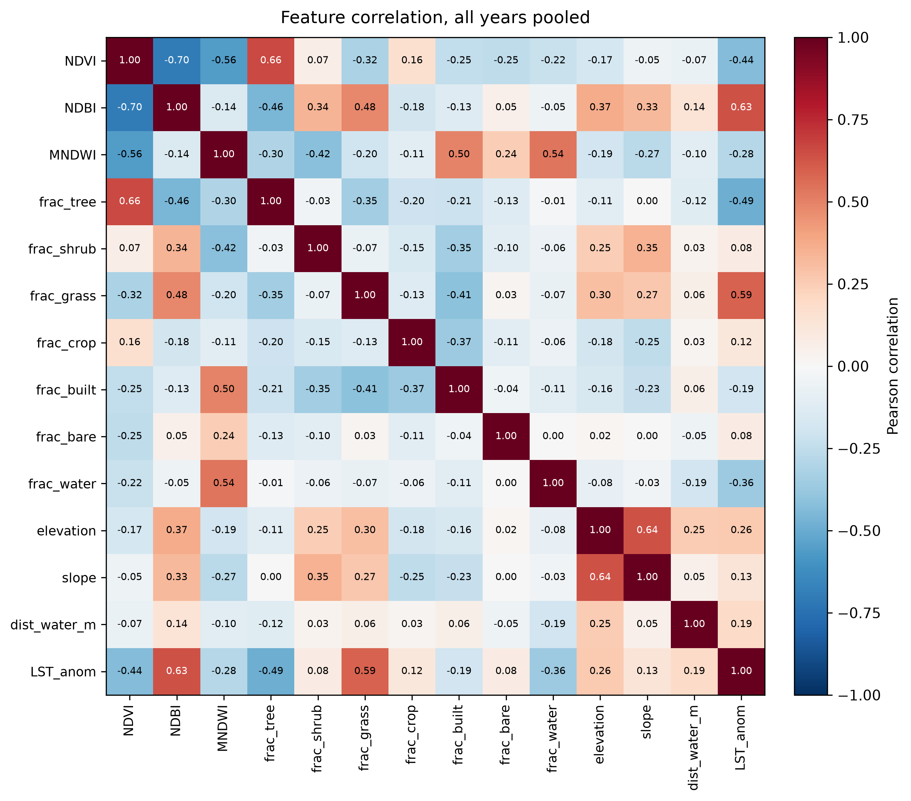
Within urban cells the picture changes: the correlation of moisture with the anomaly turns positive and that of built-up fraction vanishes, while grass and NDVI keep their signs. Drivers that matter across the whole area therefore need not matter within the city, which is why results are reported for urban cells separately throughout.
Feature Engineering
The model uses 13 features in three groups (Table III).
Spectral indices. From Sentinel-2 bands B3 (green), B4 (red), B8 (NIR) and B11 (SWIR1),
NDBI was designed as a built-up index [23], but on this grid it tracks surface dryness: dry grass, fallow fields and bare soil score as high as roofs. It is therefore called the dryness index throughout. MNDWI [24] is used on land as a moisture index. This is a substantive interpretive choice, not a renaming: read as “built-up”, NDBI would invert the story of Section XIII.
Land-cover fractions. The seven WorldCover fractions describe the composition of each cell. Linear regression drops the built-up fraction as its reference category, since the fractions sum to one; dropping the highest-variance fraction removes the exact collinearity most effectively. The tree models keep all seven.
Terrain and proximity. Elevation and slope come from SRTM; distance to the nearest water pixel is computed on a 30 m grid and capped at about 7.7 km.
Excluded columns. Coordinates (longitude, latitude, UTM easting and northing), block identifiers and the observation count are declared forbidden in the configuration, and an assertion stops the pipeline if any reaches a model. No year indicator is used, so the 2025 test cannot exploit a level shift.
| Group | Feature | Description |
|---|---|---|
| Spectral | NDVI | Greenness (Sentinel-2) |
| Spectral | Dryness (NDBI) | SWIR–NIR contrast; high for dry, bare, fallow surfaces |
| Spectral | Moisture (MNDWI) | Green–SWIR contrast; surface moisture on land |
| Land cover | frac_tree, shrub, grass, crop, built, bare, water | Share of the cell in each WorldCover class |
| Terrain | Elevation, slope | SRTM |
| Proximity | Distance to water | Metres to the nearest water pixel |
Model Development
Learners
Five models are compared on identical folds:
- a mean baseline (scikit-learn
DummyRegressor), the floor; - linear regression, standardised inside a scikit-learn pipeline [18], the linear status quo of the UHI literature;
- Random Forest [14], a bagged tree ensemble;
- XGBoost [15] with the histogram tree method;
- LightGBM [16], a leaf-wise gradient-boosted tree ensemble.
Validation design
Three schemes are compared, all with 5 folds:
- Random CV, grouped by cell: a cell’s three years stay together, so this isolates spatial leakage from repeated-measurement leakage.
- Spatial block CV: square blocks of 1, 2, 4 or 8 km are held out whole [3], [17].
- Spatio-temporal CV: train on 2023–24 in the training blocks, test on 2025 in the held-out blocks, so the test is unseen in both space and time.
Block size comes from the autocorrelation the model cannot already explain. The raw anomaly reaches 95% of its sill at about 7.6 km (Fig. 6), but most of that range is the regional core-to-periphery gradient, which the features explain. Under 2 km CV, the residual variogram of a default LightGBM reaches 95% of its sill at 5,050 m (2023), 3,950 m (2024) and 2,350 m (2025). The median, 3,950 m, gives a 4 km primary block. The tuned model’s own residuals give a median of 4,250 m. We kept the pre-registered protocol rather than re-measure under a different one, because the measured range grows with the block size used to generate the residuals (3,450 m under random CV to 5,250 m under 8 km CV). The 8 km results are reported as the conservative bound.
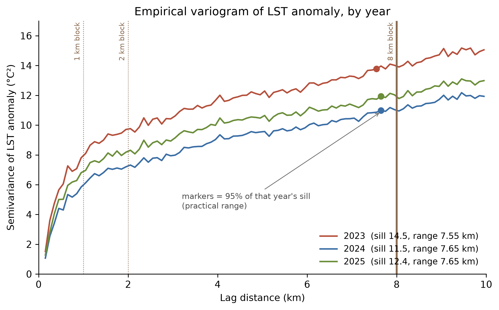
Fold layout. An early check found that unshuffled block assignment produced east-west strip folds, because block identifiers are ordered by column. So blocks are dealt to folds at random, repeated over five seeds (42–46), and every result is the mean ± standard deviation over all 25 seed × fold runs. The strip layout is kept as a stress test of extrapolating across latitude. Fig. 7 shows an 8 km layout and why fold composition varies: urban cells are centrally concentrated with ribbon sprawl, so no layout can make every fold representative. Algorithm 1 states the whole evaluation loop.
Algorithm 1. Spatial block cross-validation with randomised layouts
- Input: land-cell table (2023–25), block size , models , seeds , .
- Assign each cell to the km block that contains it; all years of a cell share the block.
- for each seed do
- Shuffle the block list with seed and deal blocks to folds in turn.
- for each fold and each model do
- Fit (with any scaling) on rows outside fold ; predict rows in fold .
- Record RMSE, MAE and for ; release the fitted model.
- Output: mean ± std over the runs, and paired differences per .
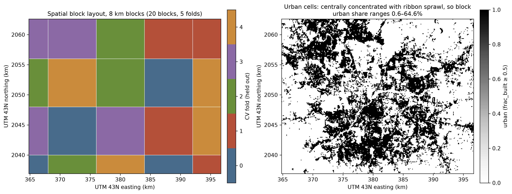
Training protocol
For each scheme, seed and fold, every model is fitted on the training rows and predicts the held-out rows, producing out-of-fold predictions for all rows. Scaling for linear regression is fitted inside the fold. Fitted forests are released before the next fold, so only one is held in memory at a time.
Explanation
SHAP values [7] are computed with interventional TreeSHAP [8] for a LightGBM refitted on all land rows of the three years. They use a 1,000-row background sample and a 10,000-row sample stratified by year and urban/rest. Interventional SHAP is used because the features are strongly correlated.
- Additivity: for every row the SHAP values plus the base value must equal the model’s prediction, ; the check exposed a float32 rounding issue that is now fixed.
- Robustness: XGBoost is explained on the same rows, and path-dependent SHAP is compared with interventional SHAP.
- Driver groups: because the indices trade credit, the per-cell map uses groups (spectral, dry cover, tree cover, terrain, water proximity, built), whose SHAP is the sum of the members’.
- Thresholds: fitted as one-knot segmented regressions with bootstrap confidence intervals. Land-cover fractions with many zero cells are split into a step at zero and a fit on positive values.
- Interactions: use path-dependent SHAP interaction values, since no interventional algorithm exists.
Greening scenarios
The targets are urban cells (built-up ≥ 50%) in the hottest decile of their observed 2023–25 mean anomaly. Selecting on observed rather than predicted heat avoids depending on the model’s 54% precision at finding the hottest urban cells. Three scenarios are simulated: (A) +10 points of tree cover; (B) +20 points; (C) raise tree cover to the fitted 10.2% knot. The new cover is taken from built, bare and grass in proportion to their shares, so the fractions still sum to one. The lower bound changes the fractions only and holds the spectral indices fixed; the realistic bound also moves each index by the change that a spatially validated land-cover-to-index model predicts. Every scenario runs through tuned LightGBM, XGBoost and RF, is averaged over the three years, and is checked against a nearest-neighbour test of whether the edited cells resemble real cells in the training data.
Hyperparameter Tuning
Hyperparameters are tuned by randomised search with 25 candidates per model, scored on negative RMSE, inside spatial CV on the seed-42 4 km layout. The layout is computed on the full 2023–24 table and carried into a 60,000-row subsample as explicit splits, so the tuning folds are exactly the evaluation folds of that seed. The search uses 2023–24 rows only, so the 2025 test was never seen during selection. The search spaces are:
- Random Forest: 200–500 trees, depth 8–20, minimum leaf size 1–20, feature fraction 0.3–0.7;
- XGBoost: 300–1,200 trees, depth 4–10, learning rate 0.01–0.1, row and column subsampling 0.6–1.0, minimum child weight 1–20, L2 penalty 0.1–10;
- LightGBM: 300–1,200 trees, 15–127 leaves, learning rate 0.01–0.1, minimum child samples 10–100, row and column subsampling 0.6–1.0, L2 penalty 0.1–10.
Table IV gives the selected settings. All three boosted or bagged models converge on large, slowly learning ensembles, and their tuning RMSEs differ by less than 0.02 °C, an early sign of the tie reported in Section XIII.
| Model | Selected hyperparameters | Tuning RMSE (°C) |
|---|---|---|
| LightGBM | n_estimators 1200, learning_rate 0.01, num_leaves 63, min_child_samples 10, subsample 0.8, colsample_bytree 0.6, reg_lambda 1.0 | 1.7505 |
| XGBoost | n_estimators 1200, learning_rate 0.01, max_depth 8, min_child_weight 20, subsample 0.8, colsample_bytree 0.8, reg_lambda 1.0 | 1.7498 |
| Random Forest | n_estimators 200, max_depth 16, min_samples_leaf 2, max_features 0.3 | 1.7674 |
Because selection used the same seed-42 folds that later report spatial-CV scores, those scores are mildly optimistic for that seed. A nested CV would remove the bias at five times the cost; instead, the spatio-temporal 2025 test, which neither tuning nor block choice touched, serves as the clean check.
Evaluation Metrics
For held-out cells with observed anomaly , prediction and mean , the primary metric is the root-mean-square error, reported with the mean absolute error and the coefficient of determination:
RMSE is in °C, the target’s own unit, and penalises large misses, which matter for locating hot spots. Each metric is computed per fold and reported as mean ± standard deviation over 25 runs (5 seeds × 5 folds). Four diagnostics complement it:
- Paired differences: model-minus-reference RMSE on identical (seed, fold) pairs, so a tie is visible as a tie.
- CV gap: RMSE under spatial CV minus RMSE under random CV, the measure of RQ3.
- Hottest-decile detection: the share of the observed hottest 10% of cells that is also in the predicted hottest 10% (chance is 10%).
- Residual Moran’s I [25] on 100 m queen neighbours,
where are mean-centred residuals and for neighbouring cells; values near 0 mean the features explain the spatial structure, values near 1 mean they do not.
Experimental Results
Model comparison
Table V and Fig. 8 compare the models. Under random CV, XGBoost is clearly best (1.594 °C, better than LightGBM in all 25 paired runs). Once test areas are unseen, that lead disappears. At 4 km the three tree models are tied (LightGBM 1.746 ± 0.060, XGBoost 1.746 ± 0.064, RF 1.756 ± 0.059 °C), and the paired XGBoost-LightGBM difference is −0.000 ± 0.006 °C. LightGBM is used as the reference model because it is lowest on the clean 2025 test and the cheapest to explain, not because it is more accurate.
| Model | Random CV | Spatial 4 km | R² (4 km) | Spatio-temporal 2025 | R² (2025) |
|---|---|---|---|---|---|
| Baseline (mean) | 3.428 ± 0.015 | 3.451 ± 0.187 | −0.042 | 3.392 ± 0.210 | −0.044 |
| Linear regression | 1.849 ± 0.010 | 1.873 ± 0.047 | 0.691 | 1.897 ± 0.138 | 0.670 |
| Random Forest | 1.637 ± 0.008 | 1.756 ± 0.059 | 0.728 | 1.749 ± 0.107 | 0.721 |
| XGBoost | 1.594 ± 0.009 | 1.746 ± 0.064 | 0.732 | 1.750 ± 0.109 | 0.720 |
| LightGBM | 1.620 ± 0.009 | 1.746 ± 0.060 | 0.732 | 1.747 ± 0.108 | 0.721 |
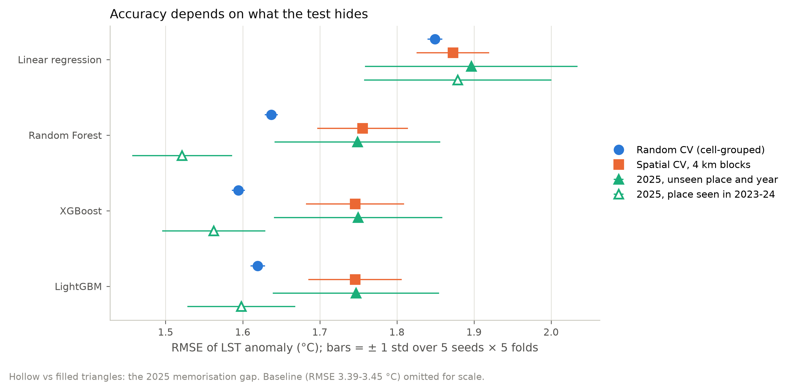
How much random CV overstates accuracy (RQ3)
Fig. 9 plots error against block size. With the fold layout controlled, error rises steadily with block size. For LightGBM, RMSE goes from 1.620 °C (random) to 1.675, 1.706, 1.746 and 1.840 °C at 1, 2, 4 and 8 km, and R² falls from 0.777 to 0.685.
The inflation depends on the model. From random to 4 km CV, the trees lose 0.118 (RF), 0.126 (LightGBM) and 0.151 °C (XGBoost), i.e. +7.2% to +9.5%. Linear regression loses only 0.023 °C (+1.3%). The more flexible the model, the more local, place-specific structure random CV rewards. Comparing models under random CV therefore favours the most flexible one, not only the absolute scores.
The east-west strip layout costs LightGBM a further 0.016 °C (1.762 ± 0.113 against 1.746 ± 0.060 °C). It nearly doubles the fold spread, but it does not change any conclusion.
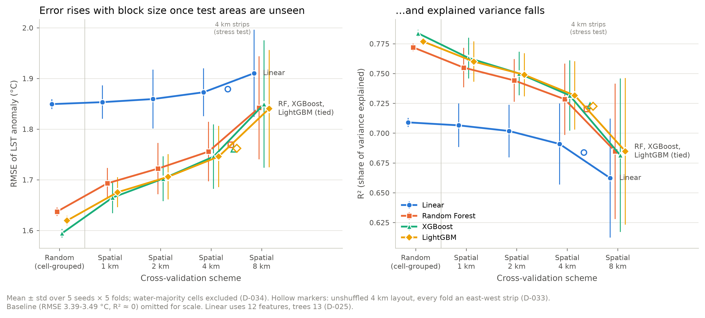
The 2025 test and the cost of memorising places
On 2025, in blocks never seen in training, LightGBM scores 1.747 ± 0.108 °C (R² 0.721). Scored on the same rows, a model that had seen those places in 2023–24 reaches 1.598 °C (R² 0.767). That memorisation gap is 0.149 °C for LightGBM, 0.187 °C for XGBoost, 0.227 °C for RF and 0.018 °C for linear regression (Fig. 8): the same model-dependent pattern as RQ3. A pure temporal holdout on the same cells would have reported R² ≈ 0.77 for the wrong reason. That is why the spatio-temporal design replaced it. Fig. 10 shows that the out-of-fold predictions follow the 1:1 line in both designs, with mild shrinkage of the most extreme anomalies toward the mean.
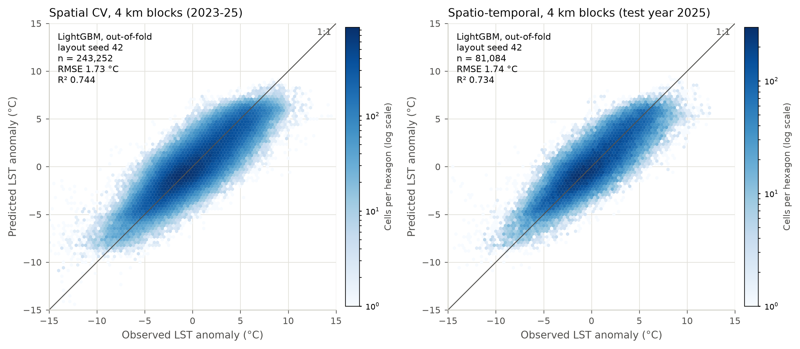
Where the errors are
Urban vs rest. Urban cells have lower error but also lower R². At 4 km, LightGBM’s RMSE is 1.614 °C in urban cells against 1.805 °C elsewhere, but R² is 0.542 against 0.753. The urban anomaly range is narrower (baseline RMSE 2.662 against 3.771 °C), so the same error is a larger share of it. Urban performance is therefore quoted in °C.
Hottest cells. 62.3% of the observed hottest tenth of cells is also in the predicted hottest tenth, and 54.2% within urban cells (chance is 10%).
Spatial structure. The residuals remain spatially clustered (Fig. 11). Moran’s I [25] on 100 m queen neighbours is 0.583–0.651 for LightGBM at 4 km, against 0.889–0.898 for the raw anomaly. The features explain about a third of the neighbour-to-neighbour similarity.
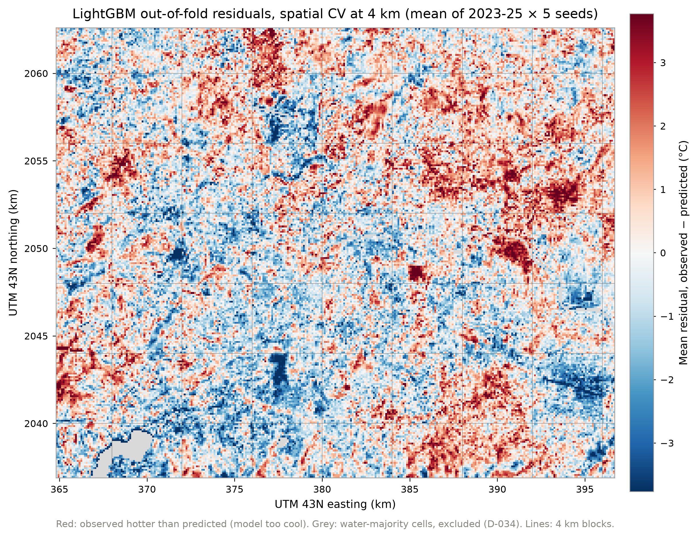
Drivers (RQ1)
Fig. 12 and Table VI summarise the SHAP attribution. The model’s predictions are associated most strongly with the spectral indices:
- NDVI: mean |SHAP| 0.955 °C;
- dryness index: 0.728 °C;
- moisture index: 0.612 °C.
Summed per cell, the spectral block contributes 1.488 °C, 2.75 times the next driver. 35% of the indices’ separate contributions cancel within the block, because they carry overlapping signal. Next come grass fraction (0.541 °C) and cropland (0.342 °C), which are associated with warmer pre-monsoon surfaces, and tree cover (0.382 °C), associated with cooler ones. Then terrain: elevation 0.253 °C, slope and distance to water 0.156 °C each. Built-up fraction ranks only 10th (0.125 °C).
XGBoost gives the same ranking: Spearman 0.989 over all cells and 0.973 over urban cells, with the same top five, but the order of the three indices differs between the models. In urban cells, moisture rises almost to NDVI’s weight (0.797 against 0.819 °C), and built-up fraction moves up to 8th.
| Driver | All cells (°C) | Urban cells (°C) | Rank, all / urban |
|---|---|---|---|
| NDVI | 0.955 | 0.819 | 1 / 1 |
| Dryness index (NDBI) | 0.728 | 0.539 | 2 / 3 |
| Moisture index (MNDWI) | 0.612 | 0.797 | 3 / 2 |
| Grass fraction | 0.541 | 0.535 | 4 / 4 |
| Tree cover fraction | 0.382 | 0.305 | 5 / 5 |
| Cropland fraction | 0.342 | 0.289 | 6 / 6 |
| Elevation | 0.253 | 0.226 | 7 / 7 |
| Built-up fraction | 0.125 | 0.167 | 10 / 8 |
| Spectral block (sum of the three indices) | 1.488 | 1.022 | — |
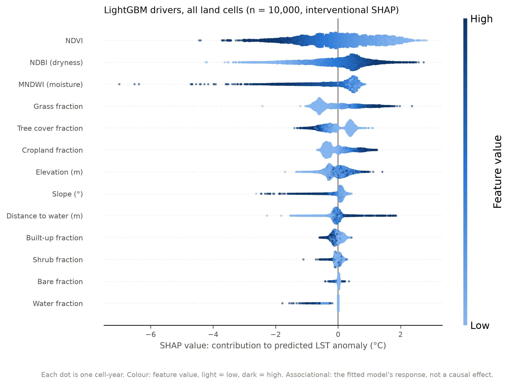
The individual indices trade credit between models and SHAP methods, so the per-cell map uses driver groups (Fig. 14). The dominant group is the same under XGBoost for 95.3% of rows, against 79.1% at feature level. Spectral drivers dominate 66.8% of cells, and dry cover (grass, crop, bare, shrub) 24.5%, rising to 42.7% of urban cells. Fig. 13 ranks the groups: the spectral block leads, followed by dry cover, tree cover and terrain. Built-up fraction is last over all cells and fifth in urban cells, where dry cover comes closest to the spectral block.
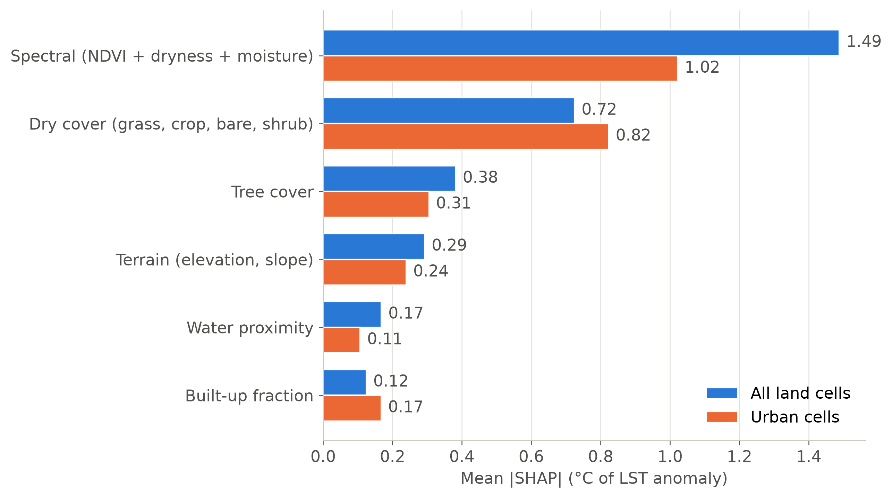
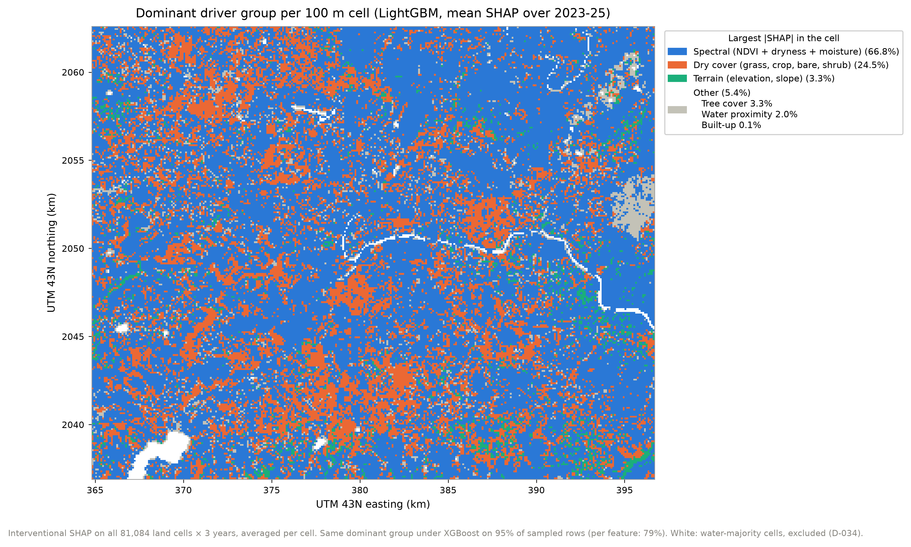
Thresholds and nonlinearity (RQ2)
The trees capture three things the linear model misses.
Thresholds and saturation. Tree cover (Fig. 16) shows a step of −0.48 °C at first canopy, then about −0.25 °C per 10 points up to a knot at 10.2% (95% CI 9.6–10.6%), and only −0.07 °C per 10 points beyond. For tree cover, a straight line explains 69% of the SHAP variation and the one-knot fit 95%. The other bends:
- the moisture index has no association below −0.39, then −1.4 °C per +0.1;
- NDVI is associated with −1.2 °C per +0.1 below 0.27 and −0.7 °C above;
- the cooling associated with water reaches about 190 m and is flat beyond;
- the elevation association flattens above 590 m.
Fig. 15 shows these shapes for the four strongest features, with the linear model’s contribution drawn on the same scale for comparison.
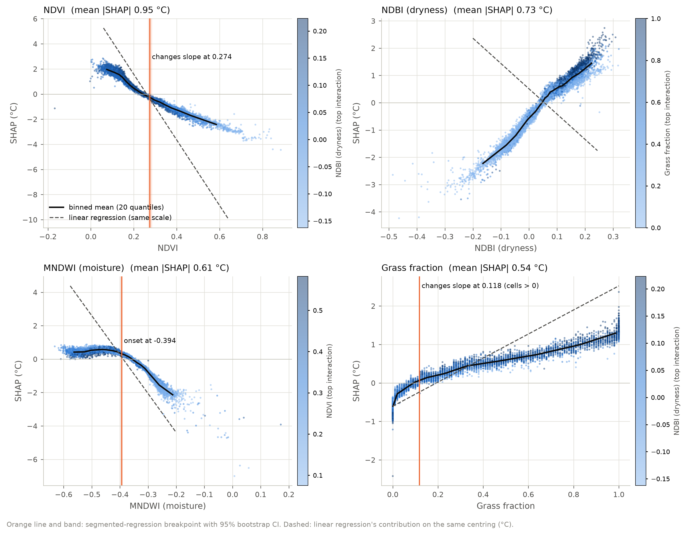
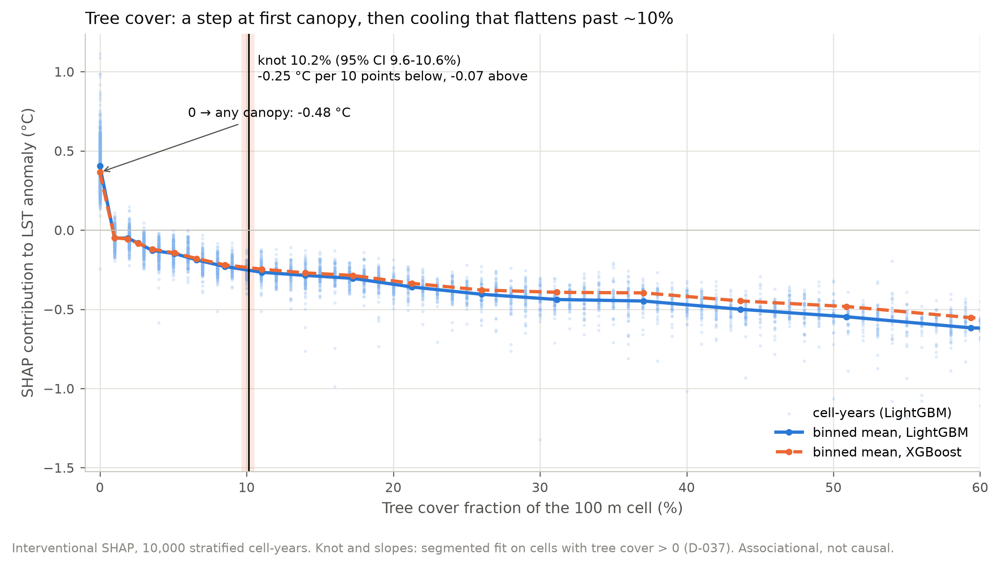
Interactions. The largest are within the dryness-vegetation system: dryness × grass (0.179 °C), NDVI × dryness (0.165 °C) and NDVI × moisture (0.145 °C).
Collinearity. Linear regression splits the spectral signal differently from the trees. Its standardised dryness coefficient is −0.84 °C per standard deviation, opposite in sign to both the raw correlation (+0.70) and the trees’ response (+0.90 °C per SD), and its NDVI coefficient is inflated to −3.33 against −1.15 °C per SD. Its spectral-block total still tracks the trees’ (r = 0.96). So individual linear coefficients of collinear indices cannot be read as driver effects. Together these differences cost linear regression 0.13 °C of spatial-CV RMSE.
The built-up association (RQ5)
Raw, built-up fraction correlates with the anomaly at r = −0.24, which is −0.22 °C per +10 points: a cool-island association. With vegetation, dryness, moisture, land cover and terrain in the model, the response attributed to built-up fraction shrinks to −0.029 °C per +10 points, 87% smaller. It does not flip to warming. Within urban cells the raw association is already nil (r = +0.009), and the small negative attribution there is model-dependent: XGBoost gives built-up fraction half LightGBM’s weight. So most of the association is carried by vegetation and dryness. In the pre-monsoon, the built core is less dry than the grass, cropland and bare land around it. It is not a cooling effect of building.
Greening scenarios (RQ4)
Targets. The targets are 2,673 of 26,726 urban cells, those with an observed mean anomaly of at least +2.41 °C. They lie on the urban fringe: 45% to the north-east and 29% to the south-east, a median 11.5 km from the centre (Fig. 17). Their median built-up is 78% and median tree cover 0.0%. 78.7% have no tree cover at all.
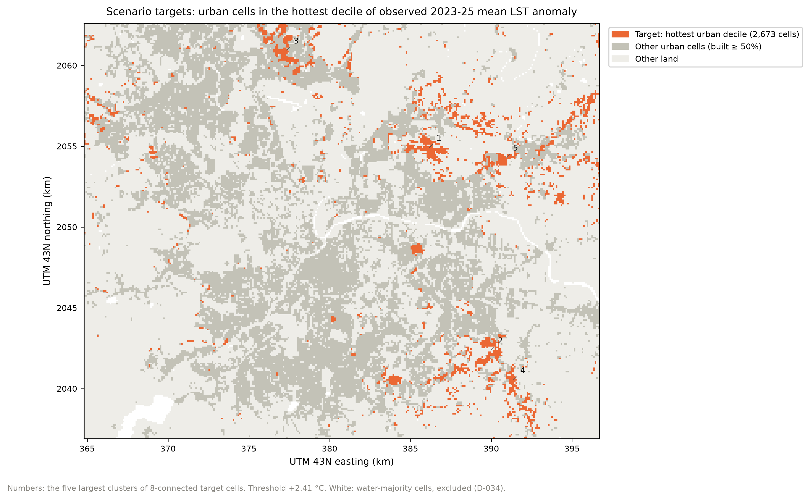
Index models. The land-cover-to-index models behind the realistic bound reach spatial-CV R² of 0.716 (moisture), 0.668 (NDVI) and 0.614 (dryness).
Results. Table VII gives the headline as a bracket from lower to realistic bound. It excludes the step from no canopy to any canopy, which is reported separately below. Raising the targets to about 10% tree cover is associated with 0.35–0.97 °C (scenario C) or 0.37–1.02 °C (+10 points) cooler surfaces. Doubling the addition to +20 points gives 0.56–1.63 °C, about 60% more cooling for twice the cover. Beyond the first point, gains per point roughly halve past the knot: −0.12 °C per point (realistic) up to 10.2%, and −0.05 °C from 12% to 30%. The models agree closely (ranges ≤ 0.16 °C). The choice of bound matters far more, by a factor of about three. Almost no edited cell falls outside the training data: at most 0.04% of rows, and 0.57% even at +30 points.
| Scenario | Lower bound (°C) | Realistic bound (°C) |
|---|---|---|
| A: +10 points | −0.37 [−0.42, −0.33] | −1.02 [−1.04, −1.00] |
| B: +20 points | −0.56 [−0.65, −0.49] | −1.63 [−1.67, −1.60] |
| C: to the 10.2% knot (avg. +9.2 points) | −0.35 [−0.38, −0.31] | −0.97 [−1.00, −0.94] |
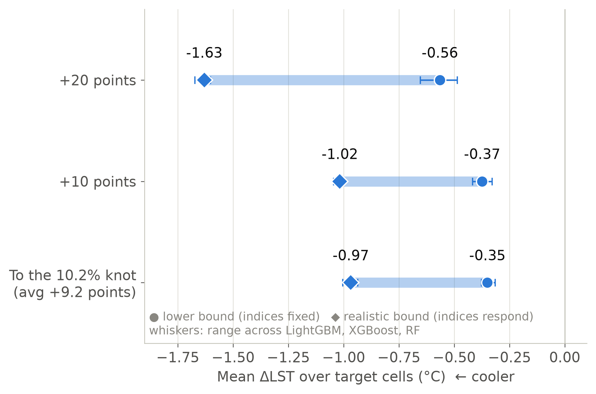
Tree-less cells. For the 78.7% of targets with no tree cover, the first point of canopy, a single 10 m WorldCover tree pixel in the cell, is associated with −1.43 °C (realistic) or −0.87 °C (lower). One tree pixel in a hectare cannot plausibly do that. The step is confounded with unobserved urban form, such as dense new fringe and industrial development. It is reported as a finding: tree-less urban cells run about 1.4 °C hotter in ways the model cannot attribute to tree cover alone.
Visualizations
The figures in this paper are produced by the pipeline from the stored tables at 300 dpi, with fixed colour conventions: the inferno scale for temperature, a red–blue diverging scale centred on zero for anomalies, residuals and SHAP values, and one fixed colour per model across every chart. Maps are drawn on the 100 m grid in UTM coordinates with water cells greyed out, so every map can be compared cell for cell.
The same results are available in an interactive Streamlit dashboard with nine pages: project overview, dataset, exploratory maps, models and validation, evaluation, explainability, interactive prediction, scenario results, and limitations. The dashboard is read-only: it loads the tables and figures the pipeline wrote, through a small tested module, so it cannot show a number that disagrees with this paper. Its one live computation is the interactive prediction page (Fig. 19), where sliders describe a cell, the final LightGBM predicts its LST anomaly with an exact per-feature breakdown, and a tree-cover control applies the lower-bound scenario edit.
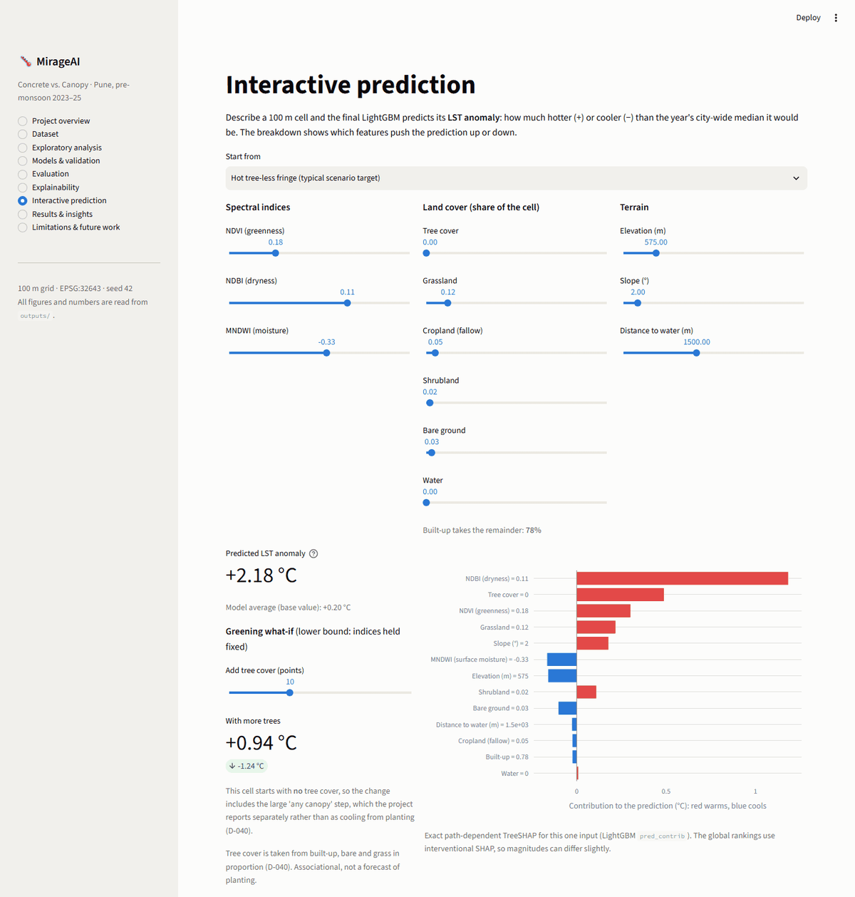
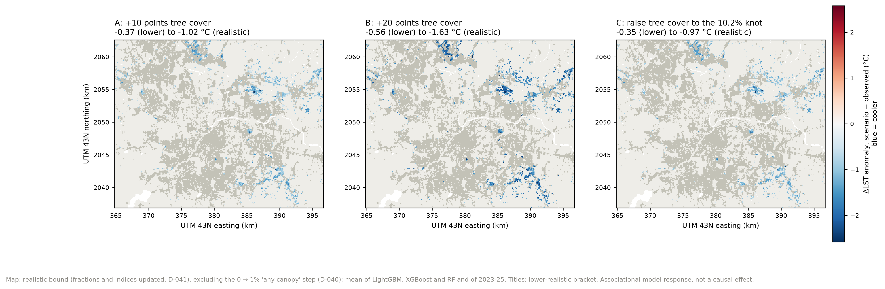
Fig. 20 maps the scenario results. Cooling concentrates in the large tree-less clusters on the eastern fringe, where both the starting temperature and the land-cover change are largest.
Discussion
An inverted, vegetation-linked cool island. Pune’s daytime pre-monsoon pattern is a cool island, not a heat island (Fig. 3), consistent with Shastri et al. [11]. The model attributes it to vegetation, dryness and moisture rather than to built-up surface itself: the built-up association shrinks by 87% once those are modelled. For planning, the hottest surfaces are the dry, tree-less fringe where the city is growing (Fig. 17), not the older core. This also agrees with the global finding that daytime SUHI intensity is governed mainly by vegetation and evapotranspiration contrasts [9].
The dryness index is not a built-up index here. NDBI correlates +0.70 with the anomaly but is highest in the least-built cells (Fig. 3). Reading it as “built-up” would have inverted the story. Labelling it as dryness, and MNDWI as moisture on land, is a substantive interpretive choice, not just a renaming.
Validation inflation depends on the model. The random-vs-spatial gap is not one number. It is 0.023 °C for linear regression and up to 0.151 °C for XGBoost, and the place-memorisation gap follows the same order. A comparison under random CV would have crowned XGBoost. Under spatial and spatio-temporal CV the three tree models are tied, which is the more honest finding. This extends the argument of [3] and [4]: random CV does not only inflate the score, it biases model selection toward the model that memorises place best.
Nonlinearity matters, but mostly at the margins. The tree models beat linear regression by about 0.13 °C, and they reveal saturation (tree cover past about 10%), onsets (moisture) and distance limits (water) that a linear model cannot express. The linear model’s collinear coefficients would also have mis-signed the dryness effect. For planning, the saturation is the actionable part: gains per point of canopy roughly halve once a cell reaches about 10–12% cover.
Confounding is the main threat to every scenario number. The models learn from differences between places, and places with more trees also differ in building height, density, roofing, irrigation and age. The residual Moran’s I of about 0.6 shows that neighbouring cells share an error the features cannot see. The tree-less step (Section XIII-H) is the clearest symptom. The realistic bound inherits the confounding twice, once through the LST models and once through the index models. The scenarios are therefore planning signals about where greening is most associated with cooler surfaces, not forecasts. This is in line with reviews that find greening evidence largely observational [10].
What the reproducibility work bought. Three of the results above exist only because of engineering checks: the shuffled fold layout (strip folds had moved the headline), the additivity test (float32 rounding), and the identifier test (merged columns). Each was caught by an assertion before it reached a number in this paper.
Limitations
- Surface, not air. LST measures the skin temperature seen by the satellite at overpass, not air temperature or comfort [1].
- Cross-sectional associations. No result is causal (Section XV). There is no before-and-after evidence of planting.
- Unmodelled drivers. Residual Moran’s I ≈ 0.6 points to building height, roofing material and irrigation, none of which is available on a consistent 100 m grid for 2023–25.
- Static land cover. WorldCover 2021 is used for all three years. Land-cover change between 2021 and 2025 is not represented.
- Block-size judgement. The 4 km block rests on a pre-registered residual range of 3,950 m. The tuned model’s residuals give 4,250 m, so 8 km results are reported as the conservative bound.
- Mildly optimistic tuning. Hyperparameters were chosen on the seed-42 spatial layout, which slightly flatters that layout’s scores. The 2025 spatio-temporal test is untouched by selection.
- SHAP depends on the method for correlated features. The order of the three indices changes between SHAP methods and models; only the block and the groups are robust.
- Scenario realism. Tree cover replaces built, bare and grass in proportion, which is a modelling convention, not a design, and the index response comes from cross-sectional models with R² 0.61–0.72.
- One city, one season, daytime only. The cool island may not hold at night or after the monsoon [11].
Future Work
- Missing urban-form drivers: add building height and density, roof material and irrigated green space, which the residual structure points to.
- Neighbourhood features: focal means of land cover would capture heat that spreads between neighbouring surfaces.
- Air temperature: pair LST with ground or mobile air-temperature data to test whether surface associations carry over to air.
- Before-and-after evidence: use multi-year land-cover change (planting and clearing) to move from cross-sectional to temporal comparisons.
- Seasons and night: extend to night-time and post-monsoon composites, where the heat island may not be inverted.
- Nested spatial CV: remove the small tuning optimism at the cost of a five-fold increase in compute.
- Live scenarios: expose the realistic-bound scenario in the dashboard by shipping the index models.
Conclusion
Table VIII summarises the answers to the five research questions.
| RQ | Answer |
|---|---|
| RQ1: drivers | Vegetation, dryness and moisture lead (spectral block 1.488 °C mean |SHAP|), then grass, tree cover, cropland and terrain; built-up fraction ranks 10th of 13. |
| RQ2: nonlinearity | Yes: tree cover saturates past about 10%, moisture has an onset, water’s reach ends near 190 m; the trees beat linear regression by about 0.13 °C under spatial CV. |
| RQ3: CV inflation | 0.12–0.15 °C RMSE (+7.2% to +9.5%) for the tree models, 0.023 °C for linear regression; random CV also changes which model looks best. |
| RQ4: greening | Raising tree cover to about 10%: 0.35–0.97 °C cooler; +10 points: 0.37–1.02 °C; +20 points: 0.56–1.63 °C (lower to realistic bound). |
| RQ5: cool island | Yes: the core is 3.4–4.0 °C cooler than the outer ring. The built-up association shrinks by 87% under control but does not vanish or flip. |
Pune’s pre-monsoon daytime surfaces are cooler in the built city than in its dry periphery. Spatially validated machine learning can map the anomaly to about 1.75 °C RMSE (R² ≈ 0.72) in places and a year it has never seen. Random validation overstates that accuracy by 0.12–0.15 °C for tree models, and it changes which model looks best. The associations the models learn are led by vegetation, dryness and moisture, with a tree-cover response that flattens past about 10%. For the 2,673 hottest urban cells, mostly tree-sparse fringe development on the eastern edge, raising tree cover to about 10% is associated with 0.4–1.0 °C cooler daytime surfaces, with gains per point roughly halving beyond about 10–12% cover. These are cross-sectional associations, not measured effects of planting. The pipeline, data-extraction code, decision log and an interactive dashboard are released so that every number can be traced and reproduced.
Appendix: Reproducibility
The code is a Python 3.11 package (mirageai) with one
driver script per phase and a single entry point. Its direct
dependencies are pinned in requirements.txt, and
requirements-lock.txt pins the full resolved environment;
the core libraries are scikit-learn 1.9.1, XGBoost 3.2.0, LightGBM
4.7.0, SHAP 0.51.0, pandas 3.0.6, rasterio 1.4.4 and the Earth Engine
API 1.7.47, with Streamlit 1.65.0 for the dashboard. From the repository
root:
| Step | Command |
|---|---|
| Install | pip install -r requirements.txt, then
pip install -e . |
| Tests | python -m pytest -q |
| Dashboard | streamlit run app.py |
| Full rebuild | python scripts/pipeline/run_all.py |
| Number check | python scripts/check_report_numbers.py |
| This paper | python scripts/build_report.py |
The full rebuild needs the Earth Engine exports in
data/raw/ and takes about an hour on a laptop CPU. The
number check recomputes every quoted value in this paper, the slides and
the viva notes from the output tables, and the paper’s build stops if
any value disagrees. The decision log (docs/DECISIONS.md)
records each methodological choice with the alternatives that were
rejected.
Acknowledgment
This work was carried out as a case study for the course Applications and Use Cases of Machine Learning (TE7483) at the Symbiosis Institute of Technology, Pune. The authors thank the course faculty for their guidance, and the USGS, ESA, NASA and Google Earth Engine teams for open access to the data used here.
References
[1] J. A. Voogt and T. R. Oke, “Thermal remote sensing of urban climates,” Remote Sens. Environ., vol. 86, no. 3, pp. 370–384, 2003, doi: 10.1016/S0034-4257(03)00079-8.
[2] Q. Weng, D. Lu, and J. Schubring, “Estimation of land surface temperature–vegetation abundance relationship for urban heat island studies,” Remote Sens. Environ., vol. 89, no. 4, pp. 467–483, 2004, doi: 10.1016/j.rse.2003.11.005.
[3] D. R. Roberts et al., “Cross-validation strategies for data with temporal, spatial, hierarchical, or phylogenetic structure,” Ecography, vol. 40, no. 8, pp. 913–929, 2017, doi: 10.1111/ecog.02881.
[4] P. Ploton et al., “Spatial validation reveals poor predictive performance of large-scale ecological mapping models,” Nature Commun., vol. 11, 2020, Art. no. 4540, doi: 10.1038/s41467-020-18321-y.
[5] H. Meyer, C. Reudenbach, S. Wöllauer, and T. Nauss, “Importance of spatial predictor variable selection in machine learning applications—Moving from data reproduction to spatial prediction,” Ecol. Model., vol. 411, 2019, Art. no. 108815, doi: 10.1016/j.ecolmodel.2019.108815.
[6] N. Gorelick, M. Hancher, M. Dixon, S. Ilyushchenko, D. Thau, and R. Moore, “Google Earth Engine: Planetary-scale geospatial analysis for everyone,” Remote Sens. Environ., vol. 202, pp. 18–27, 2017, doi: 10.1016/j.rse.2017.06.031.
[7] S. M. Lundberg and S.-I. Lee, “A unified approach to interpreting model predictions,” in Advances in Neural Information Processing Systems 30, 2017, pp. 4765–4774, doi: 10.48550/arXiv.1705.07874.
[8] S. M. Lundberg et al., “From local explanations to global understanding with explainable AI for trees,” Nature Mach. Intell., vol. 2, no. 1, pp. 56–67, 2020, doi: 10.1038/s42256-019-0138-9.
[9] S. Peng et al., “Surface urban heat island across 419 global big cities,” Environ. Sci. Technol., vol. 46, no. 2, pp. 696–703, 2012, doi: 10.1021/es2030438.
[10] D. E. Bowler, L. Buyung-Ali, T. M. Knight, and A. S. Pullin, “Urban greening to cool towns and cities: A systematic review of the empirical evidence,” Landscape Urban Plan., vol. 97, no. 3, pp. 147–155, 2010, doi: 10.1016/j.landurbplan.2010.05.006.
[11] H. Shastri, B. Barik, S. Ghosh, C. Venkataraman, and P. Sadavarte, “Flip flop of day-night and summer-winter surface urban heat island intensity in India,” Sci. Rep., vol. 7, 2017, Art. no. 40178, doi: 10.1038/srep40178.
[12] A. Siddiqui, G. Kushwaha, B. Nikam, S. K. Srivastav, A. Shelar, and P. Kumar, “Analysing the day/night seasonal and annual changes and trends in land surface temperature and surface urban heat island intensity (SUHII) for Indian cities,” Sustain. Cities Soc., vol. 75, 2021, Art. no. 103374, doi: 10.1016/j.scs.2021.103374.
[13] P. Mohammad and A. Goswami, “Surface urban heat island variation over major Indian cities across different climatic zone,” presented at the EGU General Assembly 2020, Online, 2020, Abstract EGU2020-6444, doi: 10.5194/egusphere-egu2020-6444.
[14] L. Breiman, “Random forests,” Mach. Learn., vol. 45, no. 1, pp. 5–32, 2001, doi: 10.1023/A:1010933404324.
[15] T. Chen and C. Guestrin, “XGBoost: A scalable tree boosting system,” in Proc. 22nd ACM SIGKDD Int. Conf. Knowl. Discov. Data Min., 2016, pp. 785–794, doi: 10.1145/2939672.2939785.
[16] G. Ke et al., “LightGBM: A highly efficient gradient boosting decision tree,” in Advances in Neural Information Processing Systems 30, 2017, pp. 3146–3154.
[17] R. Valavi, J. Elith, J. J. Lahoz-Monfort, and G. Guillera-Arroita, “blockCV: An R package for generating spatially or environmentally separated folds for k-fold cross-validation of species distribution models,” Methods Ecol. Evol., vol. 10, no. 2, pp. 225–232, 2019, doi: 10.1111/2041-210X.13107.
[18] F. Pedregosa et al., “Scikit-learn: Machine learning in Python,” J. Mach. Learn. Res., vol. 12, pp. 2825–2830, 2011.
[19] Earth Resources Observation and Science (EROS) Center, “Landsat 8-9 Operational Land Imager / Thermal Infrared Sensor Level-2, Collection 2,” U.S. Geological Survey, 2013, dataset, doi: 10.5066/P9OGBGM6.
[20] M. Drusch et al., “Sentinel-2: ESA’s optical high-resolution mission for GMES operational services,” Remote Sens. Environ., vol. 120, pp. 25–36, 2012, doi: 10.1016/j.rse.2011.11.026.
[21] D. Zanaga et al., “ESA WorldCover 10 m 2021 v200,” Zenodo, 2022, dataset, doi: 10.5281/zenodo.7254221.
[22] T. G. Farr et al., “The Shuttle Radar Topography Mission,” Rev. Geophys., vol. 45, no. 2, 2007, Art. no. RG2004, doi: 10.1029/2005RG000183.
[23] Y. Zha, J. Gao, and S. Ni, “Use of normalized difference built-up index in automatically mapping urban areas from TM imagery,” Int. J. Remote Sens., vol. 24, no. 3, pp. 583–594, 2003, doi: 10.1080/01431160304987.
[24] H. Xu, “Modification of normalised difference water index (NDWI) to enhance open water features in remotely sensed imagery,” Int. J. Remote Sens., vol. 27, no. 14, pp. 3025–3033, 2006, doi: 10.1080/01431160600589179.
[25] P. A. P. Moran, “Notes on continuous stochastic phenomena,” Biometrika, vol. 37, no. 1–2, pp. 17–23, 1950, doi: 10.1093/biomet/37.1-2.17.